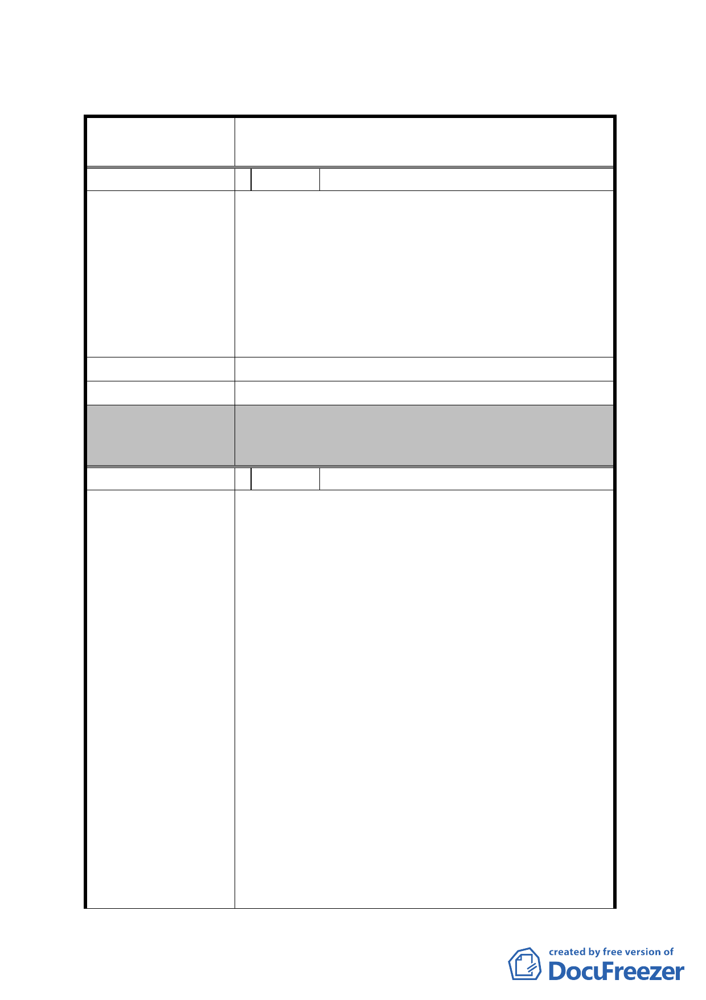

臺北市都市計畫委員會 公民或團體所提意見綜理表
案名
變更臺北市內湖區蘆洲里附近部分工業區為
保護區、住宅區及道路用地主要計畫案
編 號 1 陳情人 內湖區蘆洲里里長陳明霖
大家好，本人為內湖區蘆洲里里長。在市政府的支
持及本選區市議員之努力下，狠感謝臺北市政府公
告本里市地重劃主要計畫公展，很多里民向我表達
陳 情 理 由 支持贊成之意，強烈希望重劃儘速進行。因為本里
市地重劃前前後後談論六、七年之久了。為加速辦
理重劃，本里里民表示，希望進行較具體之細部計
畫公展。
建 議 辦 法 希望市政府早日公告本案細部計畫公展。
發 展 局 回 應 意 見 本案細部計畫已於 98 年 11 月 23 日公告公開展覽。
委員會決議
提 100 年 4 月 28 日本會第 623 次委員會審議修正通
過。
編 號 2 陳情人 皇昌投資股份有限公司
本陳情位置依民國 97 年 3 月市府規劃草案屬
「變更臺北市內湖區蘆洲里附近部分工業區為保護
區、住宅區及道路用地主要計畫案」範圍內，後考
量整體區域發展進度，本公司帶頭作為蘆洲里地區
轉型開發的先期計畫，並降低該案之重劃負擔增加
其重劃可行性，遂於民國 97 年 10 月 09 日經提「徵
求參與『促進都市再生 2010 年臺北好好看』開發計
陳 情 理 由 畫案」審查委員會審查通過推薦，並依都市計畫法
第 24 條辦理「變更臺北市內湖區潭美段 1 小段 405
地號等 6 筆土地第二種工業區為科技工業區 A 區
(特)及道路用地細部計畫案」，於民國 98 年 3 月 2
日依府都規字第 09736046100 號公告公開展覽，刻
正辦理後續之都市計畫委員會審議。
然刻正進行之都市計畫委員會審查若後續結果
無法維護本公司參與市府市地重劃案之基本權益，
恐影響整體區域發展進度。本公司建議本陳情位置
- 13 -